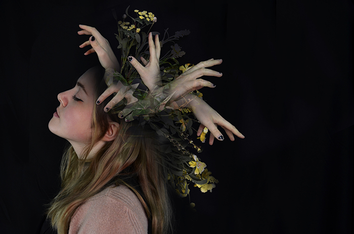

Artist Statement
Add your artist statement here. This can introduce your themes, materials, process, and wider interests. Keep this section clear and well-spaced.
You can also mention how your practice moves across photography, digital processes, installation, or painting.

Education
Alevels in Psychology, Fine art and Photography at Pershore High school Sixthform 2020-2022 | BA Fine Art with a Level 5 Diploma in Creative Computing at Norwich University of the Arts, 2022–2026.
Gallery Exhibtions
BA Interim show 2026, at The Undercroft Gallery: a community gallery space in the heart of the city of Norwich. I had the opportunity to showcase one of my works among my peers. This was an exciting opportunity to present my practice to the public and gain useful insight and experience for installing artwork.
Collaborations
Add collaboration details here, including institutions, collectives, or other artists you have worked with.
Contact
Email: Liddingtonamy5@gmail.com
Instagram: @amu_x_art | @amu_x_photography
LinkedIn: linkedin.com/in/Amy-liddington